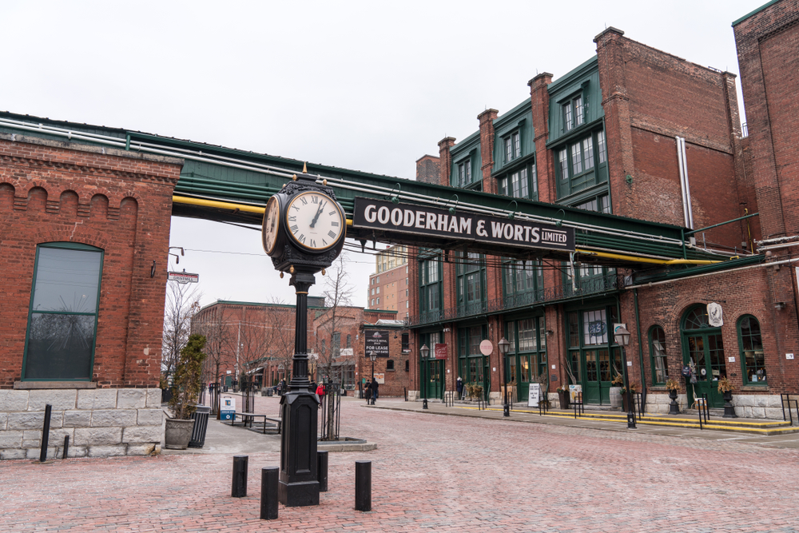
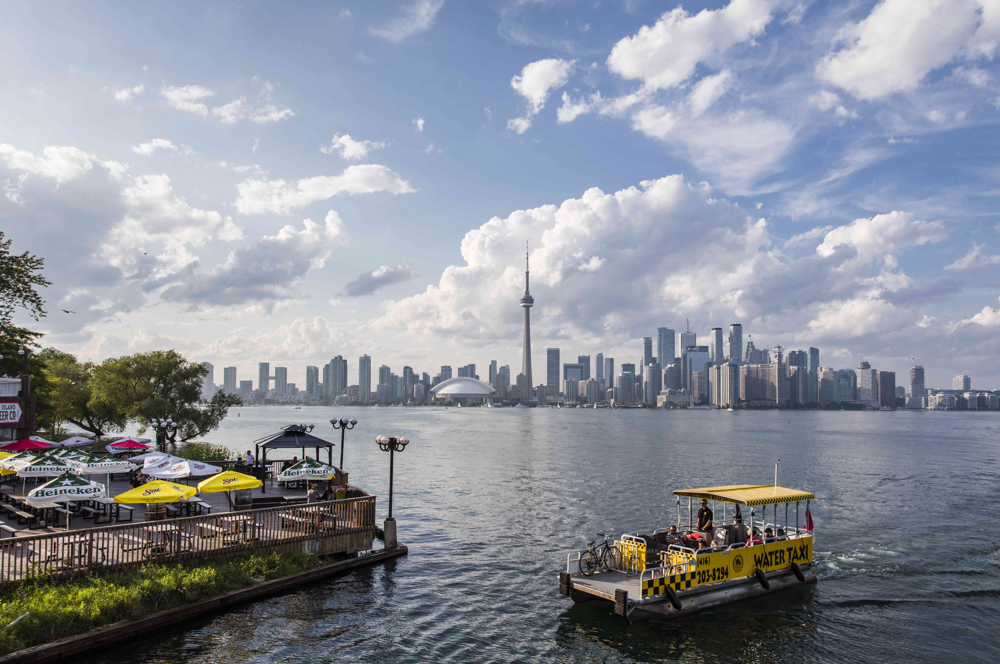
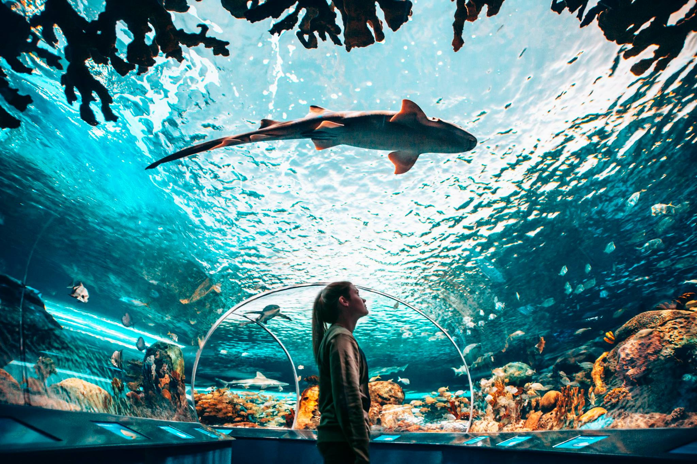

Tourism in Toronto
Toronto is the leading tourism destination in Canada which welcomes over 27.5 million visitors annually. This city is filled with several spaces that offers spectacular attractions and events, backed by the best convention and sports facilities in Canada.
The city also offers a wide variety of options for people tourists and visitors.
- Music, film, sports, cultural, entertainment, performing arts, festival and events, international cuisine, parks and recreation, first-rate accommodations, and shopping, including 7 professional sports teams, 8,000 restaurants, more than 500 live music venues, more than 50 tour operators and over 100 attractions.
- Large-scale special events can be found every weekend of the year with a number of signature events in the city including, Nuit Blanche , Luminato , Pride , Toronto Caribbean Carnival , Canadian National Exhibition and the Toronto International Film Festival.
- Toronto is one of the world’s most diverse cultural, culinary and entertainment communities, over 50% of the population is foreign born.
Also, as a newcomer, there are several places in Toronto which are considered as the most attractive and top touristic hubs for visitors.
DISTILLERY DISTRICT
The distillery district includes distilled art, dining, shops & entertainment with more than 40 boutiques and one-of-a-kind shops. The Distillery District is a well-known destination for its “best of class” creative businesses.
TORONTO ISLANDS
The Toronto Islands - also called the Island, or Toronto Island Park is located in Lake Ontario, a 13-minute ferry ride from downtown Toronto. The Island is actually a group of 15 islands inter-connected by pathways and bridges.
RIPLEY’S AQUARIUM OF CANADA
Ripley's Aquarium of Canada is a public aquarium in Toronto, Ontario, Canada. The aquarium has 5.7 million litres (1.25 million gallons) of marine and freshwater habitats from across the world. The exhibits hold more than 20,000 exotic sea and freshwater specimens from more than 450 species.
THE “TORONTO SIGN” AT NATHAN PHILIPS SQUARE
The 3D Toronto sign, officially the 3D TORONTO sign and commonly known as the Toronto sign, is an illuminated three-dimensional sign in Nathan Phillips Square in Toronto, Ontario, Canada, that spells the city's name.

CN TOWER
At a height of 553.33 m (1,815 ft., 5 in), the CN Tower is Canada’s National Tower, award-winning dining & entertainment destination, and Toronto’s “must-see” for over 4 decades. Spectacular views overlooking up to 160km from 3 observation levels. It is the perfect place for entertainment and celebration where you can eat award-winning Canadian cuisine.

HOCKEY HALL OF FAME
The Hockey Hall of Fame is home of the Stanley Cup and the finest collection of hockey artifacts in the world. Much more than a sports museum, the Hockey Hall of Fame is a vibrant, immersive and interactive celebration of hockey.

ROYAL ONTARIO MUSEUM
The Royal Ontario Museum is a museum of art, world culture and natural history in Toronto, Ontario, Canada. It is one of the largest museums in North America and the largest in Canada. It attracts more than one million visitors every year, making the ROM the most-visited museum in Canada.

ART GALLERY OF ONTARIO
The Art Gallery of Ontario is an art museum in Toronto.The museum's building complex takes up 45,000 square metres of physical space, making it one of the largest art museums in North America and the second-largest art museum in Toronto after the Royal Ontario Museum. In addition to exhibition spaces, the museum also houses an artist-in-residence office and studio, dining facilities, event spaces, gift shop, library and archives, theatre and lecture hall, research centre, and a workshop.